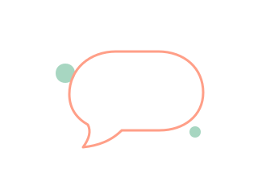

ばぶ太郎
まだ
えんじいろ
きょうの ばぶ
やさし山さん
お母さん
きょうはログもチケットも見ないで…
ねむ子
赤ちゃん
あやすは、書いた人にはいつ届いたか出ません。数だけが増えます。
いま言えないこと
0 / 140

まだ なにもない
ここに置いていい。だれのでもない場所です。
とどいた
下書きのまま
送れなかった
ブランド素材の見え方
左は app の BrandMark（インライン SVG。currentColor と
--accent-soft だけで描いてあるのでテーマに追随する）。
右は assets/engiiro-crayon-logo.png（透過なしのビットマップ。
テーマに追随しないので、暗い地では紙の白がそのまま残る）。